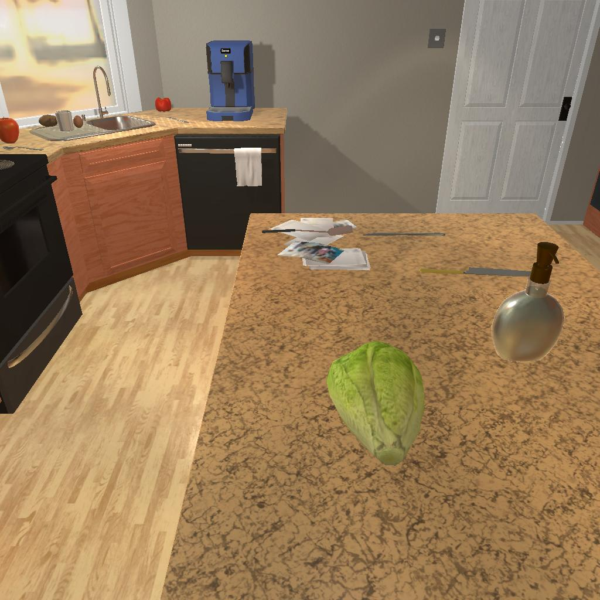

---------------------------------------------------------task: 19---------------------------------------------------------
--------------------------------------------------------------------------------------------------------------------------------------------------------------------
--------------------------------------------------------------------------------------------------------------------------------------------------------------------
Step:--------------------------------------------------------------------------3-------------------------------------------------------------------------------
----------------------------------------
VLM Prompt:
**Task**
Please perform as an embodied AI agent. Our final objective is to put a cool tomato in microwave. Below is the plan for completing the task, the current observation, alongside historical data and admissible actions for the next step. Please determine the best action for the next step!
**Plan**
Below is a detailed step-by-step plan to complete the task.
1. Find a tomato.
2. Pick up the tomato.
3. Find a fridge.
4. Cool the tomato with the fridge.
5. Find a microwave.
6. Place the cooled tomato in the microwave.
**Current Observation**
Displayed is an image capturing the current position of the agent.
Objects in The Image: ['lettuce', 'kitchen counter', 'coffee machine', 'sink', 'faucet', 'oven', 'cabinet', 'dishwasher', 'towel', 'door', 'apple', 'papers', 'knife', 'bottle']
**History Information**
Displayed are the previous observations with their corresponding actions.
State 0:
No history.
State 1:
1. Step Index in the Plan: 1
2. Objects: Tomato, Countertop, Kitchen Appliances
3. Action: go to countertop 1
State 2:
1. Step Index in the Plan: 2
2. Objects: Cabinet, Wall, Countertop, Jar Lid
3. Action: go to countertop 3
State 3:
1. Step Index in the Plan: 2
2. Objects: Window, Copper Pots and Pans, Salt Shaker, Pepper Grinder, Glass Bottle with Stopper, Black Clock, Stainless Steel Trash Can
3. Action: go to countertop 4
**Admissible Actions**
(1): go to cabinet 1
(2): go to cabinet 2
(3): go to cabinet 3
(4): go to fridge 1
(5): go to cabinet 4
(6): go to cabinet 5
(7): go to cabinet 6
(8): go to cabinet 7
(9): go to drawer 1
(10): go to drawer 2
(11): go to cabinet 8
(12): go to drawer 3
(13): go to cabinet 9
(14): go to cabinet 10
(15): go to drawer 4
(16): go to microwave 1
(17): go to cabinet 11
(18): go to toaster 1
(19): go to cabinet 12
(20): go to cabinet 13
(21): go to cabinet 14
(22): go to cabinet 15
(23): go to countertop 2
(24): go to coffeemachine 1
(25): go to garbagecan 1
(26): go to sink 1
(27): go to stoveburner 1
(28): go to stoveburner 2
(29): go to stoveburner 3
(30): go to sinkbasin 1
(31): take lettuce 1 from countertop 4
(32): take soapbottle 2 from countertop 4
(33): take knife 1 from countertop 4
(34): take apple 1 from countertop 4
(35): take mug 1 from countertop 4
(36): take spatul1 from countertop 4
(37): take lightswitch 1 from countertop 4
(38): take faucet 1 from countertop 4
(39): take butterknife 1 from countertop 4
(40): take tomato 1 from countertop 4
(41): take potato 1 from countertop 4
(42): take egg 2 from countertop 4
(43): take spoon 1 from countertop 4
(44): take butterknife 2 from countertop 4
**Analysis Guideline**
1. Analyze the history and current observation, and then determine our current step in the plan and our current place.
2. List all visible objects related to the task in the current observation, without summarizing any as "various items."
3. Analyze the objects in the current observation based on the history and the requirements for the current step, and then determine if we can complete the step with the current observation.
4. Analyze and decide on the most appropriate action to take.
5. Summarize the analysis using the following format: "Analysis: [The summarization of the analysis], The Most Appropriate Action: (i which is the integer.): [Selected action]"
**Notes**
1. We must complete each step of the plan in order and cannot skip steps when the previous ones are not finished.
2. For "Go to" actions listed as "go to xxx [n]", interpret this as there are n distinct actions available: "go to xxx 1", "go to xxx 2", ..., "go to xxx n". Select one specific action from these options instead of using "go to xxx [n]".
3. If receptacles such as drawers, cabinets, and so forth are closed in the current observation, we may try to open them.
4. Pay attention to synonyms and ensure clarity in the terms used.
5. We must determine and provide the single action which must be in the **Admissible Actions**.
6. If there is no history available, we are at the first step and the current place is "Unknown".
**Answer**
Please select the most suitable action by following the **Analysis Guideline**, keeping the above **Notes** in mind.
----------------------------------------
----------------------------------------
VLM Response:
Analysis: We are currently at step 4 of the plan, which is to cool the tomato with the fridge. In the current observation, there is no fridge visible, but there is an option available in the admissible actions to go to the fridge. Since the previous steps have been to locate and pick up the tomato, and the history indicates that the tomato has been found but not yet picked up, we need to complete step 2 before proceeding to step 4. However, the tomato is not visible in the current observation. We do see an apple, which is not the object we need according to the plan. In order to proceed with step 2, we need to locate the tomato again. Since the tomato is not in the current observation, we should move to a location where we might find it.
The Most Appropriate Action: (23): go to countertop 2
----------------------------------------
----------------------------------------
>>> Refine VLM Response and Get Pure Action: go to countertop 2
----------------------------------------
-----------------------------------------------------------------
Running time: 8.649341344833374 seconds
Total Money: 0
-----------------------------------------------------------------
-----------------------------------------------------------------
Summarization Prompt:
**Context**
Analysis: Since there is no history information, we are at the first step in the plan, which is to find a statue. The current place is unknown. In the current observation, we see a floorlamp next to an armchair with a small table that has a small object on it, which could potentially be the statue we are looking for. Since the plan requires us to find a statue first and it appears there might be one on the table next to the armchair, we should investigate this object to determine if it is the statue we need.
The Most Appropriate Action: (1): go to armchair 1
**Summary**
1. Step Index in the Plan: 1
2. Objects: Floorlamp, Armchair, Small Table, Small Object (potential statue)
3. Action: go to armchair 1
**Context**
Analysis: We are currently at step 4 of the plan, which is to cool the tomato with the fridge. In the current observation, there is no fridge visible, but there is an option available in the admissible actions to go to the fridge. Since the previous steps have been to locate and pick up the tomato, and the history indicates that the tomato has been found but not yet picked up, we need to complete step 2 before proceeding to step 4. However, the tomato is not visible in the current observation. We do see an apple, which is not the object we need according to the plan. In order to proceed with step 2, we need to locate the tomato again. Since the tomato is not in the current observation, we should move to a location where we might find it.
The Most Appropriate Action: (23): go to countertop 2
Please summarize the context by following above examples when providing the summary, and ensure that only the summary is included, without any extra explanation.
**Summary**
-----------------------------------------------------------------
-----------------------------------------------------------------
Summarization Response:
1. Step Index in the Plan: 2
2. Objects: Apple (irrelevant to the plan)
3. Action: go to countertop 2
-----------------------------------------------------------------
-----------------------------------------------------------------
Text Observation:You arrive at loc 23. On the countertop 2, you see a tomato 1, and a butterknife 2.
-----------------------------------------------------------------
UNSUCCEED